Chapter 5 Diagnostics
In this Chapter, we will take a look at each of the assumptions in a linear model. We will discuss what tools you will use to assess these assumptions, how to diagnose if the assumptions are met, some common problems often encountered when these assumptions do not hold and finally some remedies to fix these common issues. You will notice that a variety of data sets are used throughout this Chapter. This is to help visualize and test for various assumptions and how to identify when these assumptions are not met.
This Chapter aims to answer the following questions:
- How to use residuals from a multiple linear regression model to assess the assumptions.
- Does the mean of the response have a linear pattern in the explanatory variables?
- Do the residuals have a constant variance?
- Are the residuals normally distributed?
- Are the residuals independent?
- How to identify potential outliers and influential points.
- How to identify potential multicolliearity.
In multiple linear regression, the assumptions are as follows:
- The mean of the Y’s is accurately modeled by a linear function of the X’s.
- The random error term, \(\varepsilon\), is assumed to have a normal distribution with a mean of zero.
- The random error term, \(\varepsilon\), is assumed to have a constant variance, \(\sigma^{2}\).
- The errors are independent.
- No perfect collinearity.
Before exploring the assumptions of a linear model, it is always good to visually take a look at your data (if it is not too large). The pairs command in R allows you to look at all scatterplots between the variables in a data set.
To illustrate this, we will use the Salaries data set in the package carData in R that has 397 observations of salaries for professors. The explanatory variables include:
- rank: a factor with levels AssocProf, AsstProf, Prof
- discipline: a factor with levels A (“theoretical” departments) or B (“applied” departments)
- yrs.since.phd: years since PhD
- yrs.service: years of service
- sex: a factor with levels Female and Male
- salary: nine-month salary, in dollars
Using this data set, let’s take a look at the relationship between each pair of variables in Figure 5.1.
5.0.0.1 R code:
library(carData)
library(ggplot2)
library(gridExtra)
library(grid)
library(lattice)
library(nortest)
library(MASS)
library(TSA)
library(lmtest)
library(car)
pairs(Salaries)
Figure 5.1: Matrix of Scatter Plots for the Salaries Data
If there are not too many variables, this plot is a nice way to see all the relationships in the data set. The variables are listed along the diagonal and each off diagonal plot is a scatterplot of the variables represented by that row and column. For example, the first row of plots have rank on the y-axis. The first column of plots have rank along the x-axis.
5.0.1 Python Code:
import statsmodels.formula.api as smf
import statsmodels.api as sm
import statsmodels.stats as ss
import matplotlib.pyplot as plt
import scipy as sp
import pandas as pd
import numpy as np
import seaborn as sns
Salaries = r.Salaries
train=r.train
Salaries = Salaries.rename(columns={"yrs.since.phd": "yrs_since_phd", "yrs.service": "yrs_service"})
ax = sns.pairplot(data = Salaries[['rank', 'discipline', 'yrs_since_phd', 'yrs_service', 'salary']])
plt.show()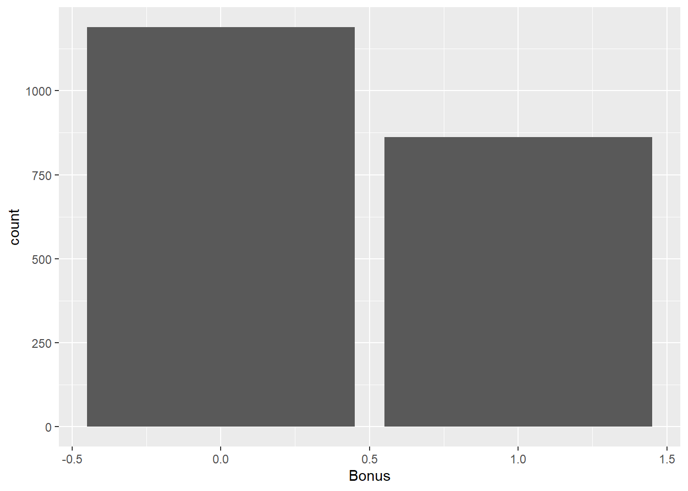
5.1 Examining Residuals
As you can see from the above list of assumptions that most of them involve the error term which is estimated by the residuals. We will be using the residuals for many of these diagnostics. One of the most useful plot is referred as the residual plot. This plot will have the residuals along the y-axis and either the predicted values or individual x-values along the x-axis. The following figure is an example using the residuals from a linear model predicting salary using all of the explanatory variables.
5.1.0.1 R code:
lm.model=lm(salary~.,data=Salaries)
ggplot(lm.model,aes(x=fitted(lm.model),y=resid(lm.model)))+geom_point(color="blue")+labs(x="Predicted Values",y="Residuals")Figure 5.2: Residuals vs. Predicted Values for Salary Model
5.1.1 Python Code:
model_mlr = smf.ols("salary ~ C(rank) + C(discipline) + yrs_since_phd + yrs_service + C(sex)", data = Salaries).fit()
model_mlr.summary()| Dep. Variable: | salary | R-squared: | 0.455 |
|---|---|---|---|
| Model: | OLS | Adj. R-squared: | 0.446 |
| Method: | Least Squares | F-statistic: | 54.20 |
| Date: | Tue, 15 Jul 2025 | Prob (F-statistic): | 1.79e-48 |
| Time: | 11:34:03 | Log-Likelihood: | -4538.9 |
| No. Observations: | 397 | AIC: | 9092. |
| Df Residuals: | 390 | BIC: | 9120. |
| Df Model: | 6 | ||
| Covariance Type: | nonrobust |
| coef | std err | t | P>|t| | [0.025 | 0.975] | |
|---|---|---|---|---|---|---|
| Intercept | 6.596e+04 | 4588.601 | 14.374 | 0.000 | 5.69e+04 | 7.5e+04 |
| C(rank)[T.AssocProf] | 1.291e+04 | 4145.278 | 3.114 | 0.002 | 4757.700 | 2.11e+04 |
| C(rank)[T.Prof] | 4.507e+04 | 4237.523 | 10.635 | 0.000 | 3.67e+04 | 5.34e+04 |
| C(discipline)[T.B] | 1.442e+04 | 2342.875 | 6.154 | 0.000 | 9811.380 | 1.9e+04 |
| C(sex)[T.Male] | 4783.4928 | 3858.668 | 1.240 | 0.216 | -2802.901 | 1.24e+04 |
| yrs_since_phd | 535.0583 | 240.994 | 2.220 | 0.027 | 61.248 | 1008.869 |
| yrs_service | -489.5157 | 211.938 | -2.310 | 0.021 | -906.199 | -72.833 |
| Omnibus: | 46.385 | Durbin-Watson: | 1.919 |
|---|---|---|---|
| Prob(Omnibus): | 0.000 | Jarque-Bera (JB): | 82.047 |
| Skew: | 0.699 | Prob(JB): | 1.53e-18 |
| Kurtosis: | 4.733 | Cond. No. | 179. |
Notes:
[1] Standard Errors assume that the covariance matrix of the errors is correctly specified.
Salaries['pred_mlr'] = model_mlr.predict()
Salaries['resid_mlr'] = model_mlr.resid
Salaries[['salary', 'pred_mlr', 'resid_mlr']].head(n = 10)## salary pred_mlr resid_mlr
## 0 139750 131577.173919 8172.826081
## 1 173200 133091.263631 40108.736369
## 2 79750 85828.036746 -6078.036746
## 3 115000 135208.859230 -20208.859230
## 4 141500 131554.536390 9945.463610
## 5 97000 98337.194064 -1337.194064
## 6 175000 135015.236444 39984.763556
## 7 147765 132271.764939 15493.235061
## 8 119250 131668.259052 -12418.259052
## 9 129000 126258.622800 2741.377200p=(ggplot(Salaries, aes(x='pred_mlr',y='resid_mlr')) + geom_point() +
geom_hline(yintercept = 0) +
labs(x="Fitted Values", y="Residuals")
)
p.show()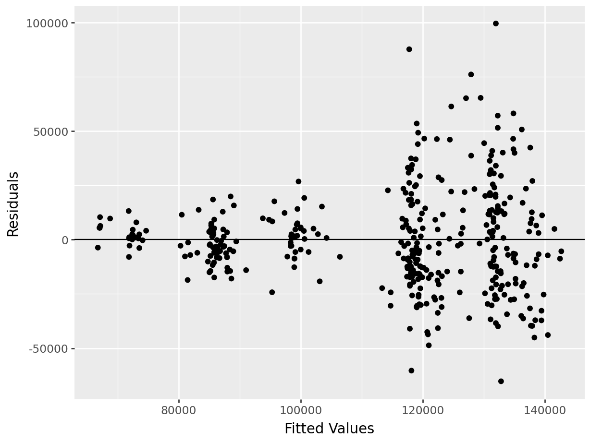
5.2 Misspecified Model
One of the assumptions assumes that the expected value of the response is accurately modeled by a linear function of the explanatory variables. If this is true, then we would expect our residual plots to be random scatter (in other words, all of the “signal” was correctly captured in the model and there is just noise left over).
Figure 5.3: Ideal residual plot showing residual values randomly distributed with equal variance
Looking at the plot in Figure 5.3, we see that there is no pattern. If you did see some type of pattern in this residual plot, it would indicate that you are missing something and need to do some more modeling. For example, a quadratic shape or curvilinear pattern to the residuals would indicate that one of our input variables has a nonlinear relationship to the response and transformations should be made to that input accordingly. For example, a residual scatter plot like Figure 5.4 would prompt us to consider a quadratic term.

Figure 5.4: Residual plot indicating that a quadratic term is required
If your model has more than one x, it is easier to see if an individual input variable has a quadratic relationship with the response when looking at plots like Figure 5.4 where the input variable is on the x-axis.
Example
Let’s take a look at an example of where a quadratic linear regression is needed. This example is studying the effect of a chemical additive on paper strength. The response variable is the amount of force required to break the paper (strength) and the explanatory variable is the amount of chemical additive (amount).
5.2.0.1 R Code:
chemical <- tibble(
amount=c(1,1,1,2,2,2,2,2,3,3,3,3,4,4,4,4,4,5,5,5,5,5),
strength=c(2.4,2.6,2.7,2.5,2.6,2.6,2.7,2.8,2.8,2.8,3.0,3.0,3.0,2.9,2.9,3.0,3.1,2.9,2.9,3.0,2.9,2.8)
)
lm.quad=lm(strength~amount, data=chemical)
summary(lm.quad)##
## Call:
## lm(formula = strength ~ amount, data = chemical)
##
## Residuals:
## Min 1Q Median 3Q Max
## -0.199780 -0.091850 0.004185 0.101707 0.206167
##
## Coefficients:
## Estimate Std. Error t value Pr(>|t|)
## (Intercept) 2.50176 0.06920 36.154 < 2e-16 ***
## amount 0.09802 0.01998 4.907 8.52e-05 ***
## ---
## Signif. codes: 0 '***' 0.001 '**' 0.01 '*' 0.05 '.' 0.1 ' ' 1
##
## Residual standard error: 0.1283 on 20 degrees of freedom
## Multiple R-squared: 0.5462, Adjusted R-squared: 0.5236
## F-statistic: 24.08 on 1 and 20 DF, p-value: 8.518e-05 ggplot(lm.quad,aes(x=amount,y=resid(lm.quad)))+geom_point(color="blue",size=3)+labs( x="Amount", y="Residuals")
Figure 5.5: Residual Plot Showing a Quadratic Relationship
The above fitted model is \[\hat{Y}_{i} = 2.5 + 0.1x_{i}.\] However, after looking at the residual plot and noticing the quadratic shape, we realize that we need a higher order term for amount.
chemical$amount.c<-scale(chemical$amount,scale=F)
lm.quad=lm(strength~amount.c + I(amount.c^2),data=chemical)
summary(lm.quad)##
## Call:
## lm(formula = strength ~ amount.c + I(amount.c^2), data = chemical)
##
## Residuals:
## Min 1Q Median 3Q Max
## -0.22276 -0.06562 -0.02763 0.07602 0.19466
##
## Coefficients:
## Estimate Std. Error t value Pr(>|t|)
## (Intercept) 2.88358 0.03783 76.228 < 2e-16 ***
## amount.c 0.09202 0.01807 5.091 6.49e-05 ***
## I(amount.c^2) -0.03728 0.01535 -2.428 0.0253 *
## ---
## Signif. codes: 0 '***' 0.001 '**' 0.01 '*' 0.05 '.' 0.1 ' ' 1
##
## Residual standard error: 0.115 on 19 degrees of freedom
## Multiple R-squared: 0.6537, Adjusted R-squared: 0.6173
## F-statistic: 17.93 on 2 and 19 DF, p-value: 4.212e-05ggplot(lm.quad,aes(x=amount.c,y=resid(lm.quad)))+geom_point(color="orange",size=2)+labs(title="Residual plot", x="Amount", y="Residuals")Figure 5.6: New Residual Plot after Fitting a Quadratic Term
The second order polynomial model is \[\hat{Y}_{i} = 2.88 + 0.09(x_{i}-\bar{x})-0.04(x_{i}-\bar{x})^{2}\] and the residuals from this model are shown in Figure 5.6. If you think there might still be some pattern in Figure 5.6, you could try a third degree polynomial:
##
## Call:
## lm(formula = strength ~ amount.c + I(amount.c^2) + I(amount.c^3),
## data = chemical)
##
## Residuals:
## Min 1Q Median 3Q Max
## -0.15941 -0.06360 0.00272 0.08579 0.14142
##
## Coefficients:
## Estimate Std. Error t value Pr(>|t|)
## (Intercept) 2.89841 0.03495 82.934 < 2e-16 ***
## amount.c 0.18335 0.04372 4.194 0.000546 ***
## I(amount.c^2) -0.04979 0.01500 -3.320 0.003805 **
## I(amount.c^3) -0.02862 0.01270 -2.254 0.036927 *
## ---
## Signif. codes: 0 '***' 0.001 '**' 0.01 '*' 0.05 '.' 0.1 ' ' 1
##
## Residual standard error: 0.1044 on 18 degrees of freedom
## Multiple R-squared: 0.7299, Adjusted R-squared: 0.6849
## F-statistic: 16.22 on 3 and 18 DF, p-value: 2.344e-05ggplot(lm.3,aes(x=amount.c,y=resid(lm.3)))+geom_point(color="orange",size=2)+labs(x="Amount", y="Residuals")Figure 5.7: New Residual Plot after Fitting a Cubic Term
The new regression equation is now \[\hat{Y}_{i} = 2.9 + 0.18(x_{i}-\bar{x}) - 0.05(x_{i}-\bar{x})^{2}-0.03(x_{i}-\bar{x})^{3}.\]
In wrapping up the misspecified model, if a linear model does not look appropriate (there is a pattern in the residual plot), then you can try the following remedies:
- Fit a polynomial or more complex regression model.
- Transform the dependent and/or independent variables to obtain linearity.
- Fit a nonlinear regression model, if appropriate (will need to decide the shape of a nonlinear model).
- Fit a nonparametric regression model (for example splines or a LOESS regression).
5.2.1 Python Code:
chemical = pd.DataFrame({'amount': [1,1,1,2,2,2,2,2,3,3,3,3,4,4,4,4,4,5,5,5,5,5],
'strength': [2.4,2.6,2.7,2.5,2.6,2.6,2.7,2.8,2.8,2.8,3.0,3.0,3.0,2.9,2.9,3.0,3.1,2.9,2.9,3.0,2.9,2.8]})
model_quad = smf.ols("strength ~ amount", data = chemical).fit()
model_quad.summary() | Dep. Variable: | strength | R-squared: | 0.546 |
|---|---|---|---|
| Model: | OLS | Adj. R-squared: | 0.524 |
| Method: | Least Squares | F-statistic: | 24.08 |
| Date: | Tue, 15 Jul 2025 | Prob (F-statistic): | 8.52e-05 |
| Time: | 11:34:04 | Log-Likelihood: | 15.001 |
| No. Observations: | 22 | AIC: | -26.00 |
| Df Residuals: | 20 | BIC: | -23.82 |
| Df Model: | 1 | ||
| Covariance Type: | nonrobust |
| coef | std err | t | P>|t| | [0.025 | 0.975] | |
|---|---|---|---|---|---|---|
| Intercept | 2.5018 | 0.069 | 36.154 | 0.000 | 2.357 | 2.646 |
| amount | 0.0980 | 0.020 | 4.907 | 0.000 | 0.056 | 0.140 |
| Omnibus: | 0.729 | Durbin-Watson: | 1.144 |
|---|---|---|---|
| Prob(Omnibus): | 0.694 | Jarque-Bera (JB): | 0.681 |
| Skew: | 0.082 | Prob(JB): | 0.712 |
| Kurtosis: | 2.154 | Cond. No. | 9.38 |
Notes:
[1] Standard Errors assume that the covariance matrix of the errors is correctly specified.
chemical['pred_mlr'] = model_quad.predict()
chemical['resid_mlr'] = model_quad.resid
p=(ggplot(chemical, aes(x="amount",y="resid_mlr")) +geom_point(color="blue") +
geom_hline(yintercept = 0) +
labs(x="Amount", y="Residuals")
)
p.show()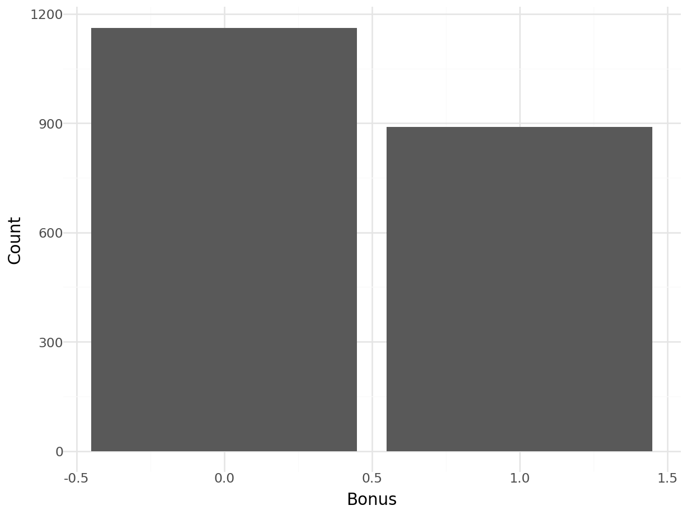
chemical['amount_c'] = chemical['amount'] - np.mean(chemical['amount'])
model_quad2 = smf.ols("strength ~ amount_c + I(amount_c**2)", data = chemical).fit()
model_quad2.summary()| Dep. Variable: | strength | R-squared: | 0.654 |
|---|---|---|---|
| Model: | OLS | Adj. R-squared: | 0.617 |
| Method: | Least Squares | F-statistic: | 17.93 |
| Date: | Tue, 15 Jul 2025 | Prob (F-statistic): | 4.21e-05 |
| Time: | 11:34:05 | Log-Likelihood: | 17.974 |
| No. Observations: | 22 | AIC: | -29.95 |
| Df Residuals: | 19 | BIC: | -26.68 |
| Df Model: | 2 | ||
| Covariance Type: | nonrobust |
| coef | std err | t | P>|t| | [0.025 | 0.975] | |
|---|---|---|---|---|---|---|
| Intercept | 2.8836 | 0.038 | 76.228 | 0.000 | 2.804 | 2.963 |
| amount_c | 0.0920 | 0.018 | 5.091 | 0.000 | 0.054 | 0.130 |
| I(amount_c ** 2) | -0.0373 | 0.015 | -2.428 | 0.025 | -0.069 | -0.005 |
| Omnibus: | 0.468 | Durbin-Watson: | 1.658 |
|---|---|---|---|
| Prob(Omnibus): | 0.791 | Jarque-Bera (JB): | 0.558 |
| Skew: | 0.013 | Prob(JB): | 0.757 |
| Kurtosis: | 2.221 | Cond. No. | 4.21 |
Notes:
[1] Standard Errors assume that the covariance matrix of the errors is correctly specified.
chemical['pred_mlr2'] = model_quad2.predict()
chemical['resid_mlr2'] = model_quad2.resid
p=(ggplot(chemical, aes(x="amount_c",y="resid_mlr2")) +geom_point(color="orange") +
geom_hline(yintercept = 0) +
labs(x="Amount", y="Residuals")
)
p.show()
model_quad3 = smf.ols("strength ~ amount_c + I(amount_c**2) + I(amount_c**3)", data = chemical).fit()
model_quad3.summary()| Dep. Variable: | strength | R-squared: | 0.730 |
|---|---|---|---|
| Model: | OLS | Adj. R-squared: | 0.685 |
| Method: | Least Squares | F-statistic: | 16.22 |
| Date: | Tue, 15 Jul 2025 | Prob (F-statistic): | 2.34e-05 |
| Time: | 11:34:05 | Log-Likelihood: | 20.708 |
| No. Observations: | 22 | AIC: | -33.42 |
| Df Residuals: | 18 | BIC: | -29.05 |
| Df Model: | 3 | ||
| Covariance Type: | nonrobust |
| coef | std err | t | P>|t| | [0.025 | 0.975] | |
|---|---|---|---|---|---|---|
| Intercept | 2.8984 | 0.035 | 82.934 | 0.000 | 2.825 | 2.972 |
| amount_c | 0.1834 | 0.044 | 4.194 | 0.001 | 0.091 | 0.275 |
| I(amount_c ** 2) | -0.0498 | 0.015 | -3.320 | 0.004 | -0.081 | -0.018 |
| I(amount_c ** 3) | -0.0286 | 0.013 | -2.254 | 0.037 | -0.055 | -0.002 |
| Omnibus: | 2.244 | Durbin-Watson: | 1.733 |
|---|---|---|---|
| Prob(Omnibus): | 0.326 | Jarque-Bera (JB): | 1.118 |
| Skew: | 0.064 | Prob(JB): | 0.572 |
| Kurtosis: | 1.903 | Cond. No. | 10.6 |
Notes:
[1] Standard Errors assume that the covariance matrix of the errors is correctly specified.
chemical['pred_mlr3'] = model_quad3.predict()
chemical['resid_mlr3'] = model_quad3.resid
p=(ggplot(chemical, aes(x="amount_c",y="resid_mlr3")) +geom_point(color="orange") +
geom_hline(yintercept = 0) +
labs(x="Amount", y="Residuals")
)
p.show()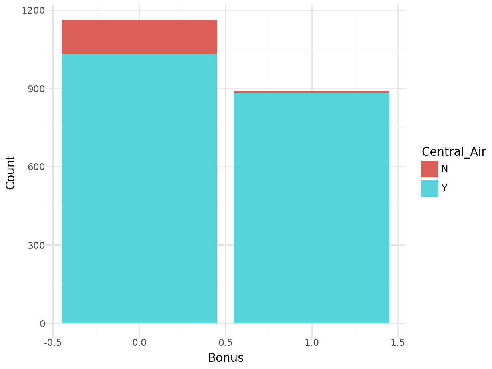
5.3 Constant Variance
Another assumption for linear regression is that the variance is constant about the line. Looking at Figure 5.8, you see that the variation about the line is constant across the line (notice the bands that have been drawn around the line).
Figure 5.8: Residual Plot Showing Non-Constant Variance
However, an example of where this is not true is shown in Figure 5.9.
Figure 5.9: Residual Plot Showing Non-Constant Variance
Notice how the variability increases as the predicted values increase (the bands get wider). This is referred to as heteroskedasticity in the variance, which violates the constant variance assumption (homoskedasticity). The homoskedastic assumption is about the regression line, so it is best to look at the plot of residuals versus predicted values (not individual x-values). There are a few tests for this assumption, but they are limited in what they are able to test. Best way to evaluate this assumption is by visualizing the residual plot and make a judgement call. If the variance appears to be heteroskadastic, any inferences under the traditional assumptions will be incorrect. In other words, hypothesis tests and confidence intervals based on the t, F, and \(\chi^{2}\) distributions will not be valid.
Example
The following fictious salary data set is from the online textbook Applied Statistics with R. The explanatory variable is number of years employment and the response variable is annual salary.
5.3.0.1 R code:
years=c(1,1,1,2,2,2,2,3,3,3,3,4,4,4,4,5,5,5,5,6,6,6,6,7,7,7,7,8,8,8,8,9,9,9,9,9,10,10,10,10,11,11,11,11,12,12,12,12,13,13,13,13,14,14,14,14,15,15,15,15,16,16,16,16,17,17,17,17,17,18,18,18,18,19,19,19,19,20,20,20,20,21,21,21,21,22,22,22,22,23,23,23,23,24,24,24,24,25,25,25)
salary=c(41504,32619,44322,40038,46147,38447,38163,42104,25597,39599,55698,47220,65929,55794,45959,52460,60308,61458,56951,56174,59363,57642,69792,59321,66379,64282,48901,100711,59324,54752,73619,65382,58823,65717,92816,72550,71365,88888,62969,45298,111292,91491,106345,99009,73981,72547,74991,139249,119948,128962,98112,97159,125246,89694,73333,108710,97567,90359,119806,101343,147406,153020,143200,97327,184807,146263,127925,159785,174822,177610,210984,160044,137044,182996,184183,168666,121350,193627,142611,170131,134140,129446,201469,202104,220556,166419,149044,247017,247730,252917,235517,241276,197229,175879,253682,262578,207715,221179,212028,312549)
lm.var=lm(salary~years)
ggplot(lm.var,aes(x=fitted(lm.var),y=resid(lm.var)))+geom_point(color="blue")+labs(title="Residual Plot", x="Predicted Values",y="Residuals")
Figure 5.10: Residuals With Heteroskedasticity
As you can see from the residual plot in Figure 5.10, the graph exhibits a fan-shape and the variance is increasing as the predicted values get larger. We can apply a logarithmic transform to try to stabilize the variance, the result of which is shown in Figure 5.11.
Figure 5.11: Residual Plot Showing Stabilized Variance after Log Transform
The log transform stabilized the variance and produces a better residual plot.
Another way to handle heteroscedacity is to perform a Weighted Least Squares. The hardest part of WLS is how to identify the weights. For example:
x<-c(rep(2:10,each=5))
set.seed(26785)
error<-rnorm(length(x),0,x)
y<-50 + 1.2*x + error
model1<-lm(y~x)
ggplot(model1, aes(x = .fitted, y = .resid)) +
geom_point()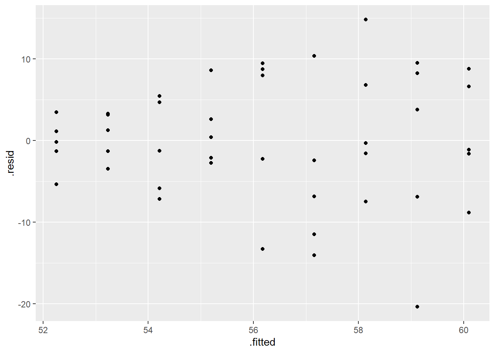
##
## Call:
## lm(formula = y ~ x)
##
## Residuals:
## Min 1Q Median 3Q Max
## -20.3750 -3.4632 -0.3275 5.4592 14.8181
##
## Coefficients:
## Estimate Std. Error t value Pr(>|t|)
## (Intercept) 50.2878 2.8033 17.939 <2e-16 ***
## x 0.9811 0.4292 2.286 0.0272 *
## ---
## Signif. codes: 0 '***' 0.001 '**' 0.01 '*' 0.05 '.' 0.1 ' ' 1
##
## Residual standard error: 7.433 on 43 degrees of freedom
## Multiple R-squared: 0.1084, Adjusted R-squared: 0.08763
## F-statistic: 5.226 on 1 and 43 DF, p-value: 0.02724# weights using standard deviations (not usually known)
weights1<-1/x^2
model2<-lm(y~x,weights = weights1)
summary(model2)##
## Call:
## lm(formula = y ~ x, weights = weights1)
##
## Weighted Residuals:
## Min 1Q Median 3Q Max
## -2.57601 -0.79232 -0.06276 1.03159 1.83044
##
## Coefficients:
## Estimate Std. Error t value Pr(>|t|)
## (Intercept) 49.9844 1.4734 33.926 < 2e-16 ***
## x 1.0408 0.3641 2.858 0.00654 **
## ---
## Signif. codes: 0 '***' 0.001 '**' 0.01 '*' 0.05 '.' 0.1 ' ' 1
##
## Residual standard error: 1.216 on 43 degrees of freedom
## Multiple R-squared: 0.1597, Adjusted R-squared: 0.1401
## F-statistic: 8.17 on 1 and 43 DF, p-value: 0.006542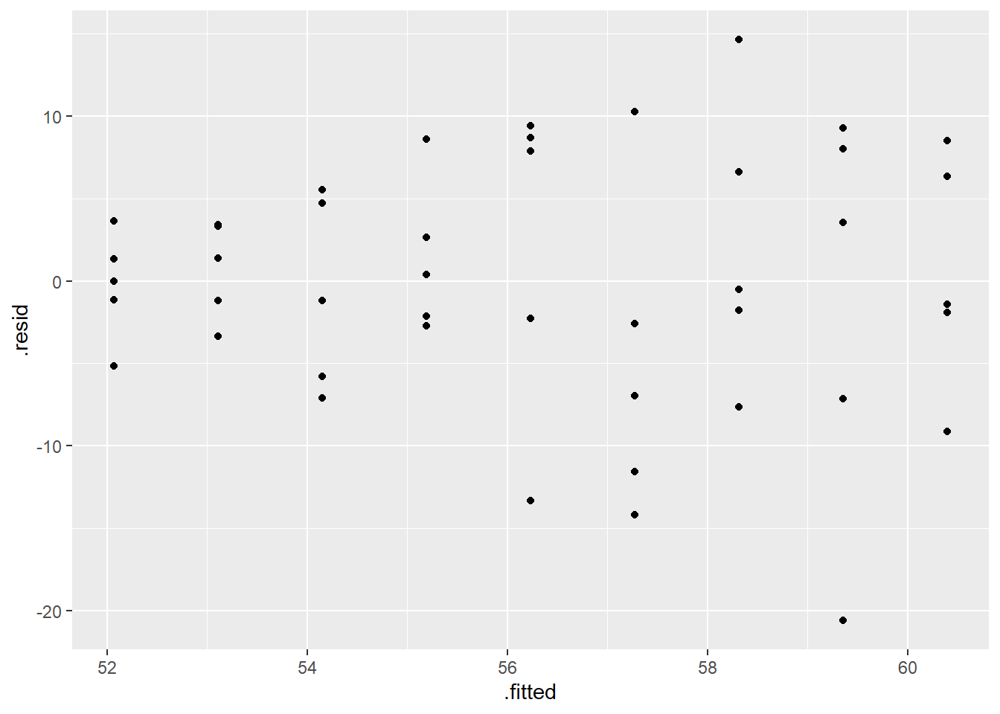
Notice that the estimates do NOT change from OLS to WLS!! Just the standard errors. Another technique is to use robust standard errors. This can be done within the estimatr package:
##
## Call:
## lm_robust(formula = y ~ x, se_type = "HC1")
##
## Standard error type: HC1
##
## Coefficients:
## Estimate Std. Error t value Pr(>|t|) CI Lower CI Upper DF
## (Intercept) 50.2878 1.8577 27.070 1.216e-28 46.5413 54.034 43
## x 0.9811 0.3802 2.581 1.336e-02 0.2144 1.748 43
##
## Multiple R-squared: 0.1084 , Adjusted R-squared: 0.08763
## F-statistic: 6.659 on 1 and 43 DF, p-value: 0.01336##
## Call:
## lm_robust(formula = y ~ x)
##
## Standard error type: HC2
##
## Coefficients:
## Estimate Std. Error t value Pr(>|t|) CI Lower CI Upper DF
## (Intercept) 50.2878 1.8672 26.932 1.496e-28 46.5222 54.053 43
## x 0.9811 0.3825 2.565 1.390e-02 0.2096 1.753 43
##
## Multiple R-squared: 0.1084 , Adjusted R-squared: 0.08763
## F-statistic: 6.578 on 1 and 43 DF, p-value: 0.0139In conclusion, if the assumption of Homoskadicity of variance is violated, you can try:
- Transform data.
- Use Weighted Least Squares (WLS) or iteratively reweighted least squares (IRLS).
- Use robust standard errors.
- Use a different distribution (for example if the response is count data, use Poisson distribution).
5.3.1 Python Code:
experience = pd.DataFrame({'salary': [41504,32619,44322,40038,46147,38447,38163,42104,25597,39599,55698,47220,65929,55794,45959,52460,60308,61458,56951,56174,59363,57642,69792,59321,66379,64282,48901,100711,59324,54752,73619,65382,58823,65717,92816,72550,71365,88888,62969,45298,111292,91491,106345,99009,73981,72547,74991,139249,119948,128962,98112,97159,125246,89694,73333,108710,97567,90359,119806,101343,147406,153020,143200,97327,184807,146263,127925,159785,174822,177610,210984,160044,137044,182996,184183,168666,121350,193627,142611,170131,134140,129446,201469,202104,220556,166419,149044,247017,247730,252917,235517,241276,197229,175879,253682,262578,207715,221179,212028,312549],
'years': [1,1,1,2,2,2,2,3,3,3,3,4,4,4,4,5,5,5,5,6,6,6,6,7,7,7,7,8,8,8,8,9,9,9,9,9,10,10,10,10,11,11,11,11,12,12,12,12,13,13,13,13,14,14,14,14,15,15,15,15,16,16,16,16,17,17,17,17,17,18,18,18,18,19,19,19,19,20,20,20,20,21,21,21,21,22,22,22,22,23,23,23,23,24,24,24,24,25,25,25]})
model_var = smf.ols("salary ~ years", data = experience).fit()
model_var.summary()| Dep. Variable: | salary | R-squared: | 0.834 |
|---|---|---|---|
| Model: | OLS | Adj. R-squared: | 0.832 |
| Method: | Least Squares | F-statistic: | 492.8 |
| Date: | Tue, 15 Jul 2025 | Prob (F-statistic): | 5.16e-40 |
| Time: | 11:34:07 | Log-Likelihood: | -1162.5 |
| No. Observations: | 100 | AIC: | 2329. |
| Df Residuals: | 98 | BIC: | 2334. |
| Df Model: | 1 | ||
| Covariance Type: | nonrobust |
| coef | std err | t | P>|t| | [0.025 | 0.975] | |
|---|---|---|---|---|---|---|
| Intercept | 5302.0807 | 5749.963 | 0.922 | 0.359 | -6108.534 | 1.67e+04 |
| years | 8636.6123 | 389.044 | 22.200 | 0.000 | 7864.567 | 9408.658 |
| Omnibus: | 1.672 | Durbin-Watson: | 1.331 |
|---|---|---|---|
| Prob(Omnibus): | 0.433 | Jarque-Bera (JB): | 1.129 |
| Skew: | 0.212 | Prob(JB): | 0.569 |
| Kurtosis: | 3.303 | Cond. No. | 31.2 |
Notes:
[1] Standard Errors assume that the covariance matrix of the errors is correctly specified.
experience['pred_mlr'] = model_var.predict()
experience['resid_mlr'] = model_var.resid
p=(ggplot(experience, aes(x="pred_mlr",y="resid_mlr")) +geom_point(color="blue") +
geom_hline(yintercept = 0) +
labs(x="Predicted Values", y="Residuals")
)
p.show()
To perform spearman’s rank test:
from scipy.stats import spearmanr
experience['abs_resid']=experience['resid_mlr'].abs()
correlation, p_value = spearmanr(experience['pred_mlr'], experience['abs_resid'])
print(f"Spearman correlation: {correlation}")## Spearman correlation: 0.30767299844102397## P-value: 0.001846005094365443Now let’s do the log transformation:
experience['log_salary'] = np.log(experience['salary'])
model_var2 = smf.ols("log_salary ~ years", data = experience).fit()
model_var2.summary()| Dep. Variable: | log_salary | R-squared: | 0.891 |
|---|---|---|---|
| Model: | OLS | Adj. R-squared: | 0.890 |
| Method: | Least Squares | F-statistic: | 805.2 |
| Date: | Tue, 15 Jul 2025 | Prob (F-statistic): | 4.63e-49 |
| Time: | 11:34:08 | Log-Likelihood: | 22.359 |
| No. Observations: | 100 | AIC: | -40.72 |
| Df Residuals: | 98 | BIC: | -35.51 |
| Df Model: | 1 | ||
| Covariance Type: | nonrobust |
| coef | std err | t | P>|t| | [0.025 | 0.975] | |
|---|---|---|---|---|---|---|
| Intercept | 10.4838 | 0.041 | 255.179 | 0.000 | 10.402 | 10.565 |
| years | 0.0789 | 0.003 | 28.376 | 0.000 | 0.073 | 0.084 |
| Omnibus: | 3.204 | Durbin-Watson: | 1.818 |
|---|---|---|---|
| Prob(Omnibus): | 0.202 | Jarque-Bera (JB): | 2.855 |
| Skew: | -0.413 | Prob(JB): | 0.240 |
| Kurtosis: | 3.049 | Cond. No. | 31.2 |
Notes:
[1] Standard Errors assume that the covariance matrix of the errors is correctly specified.
experience['pred_mlr2'] = model_var2.predict()
experience['resid_mlr2'] = model_var2.resid
p = (ggplot(experience, aes(x='pred_mlr2',y='resid_mlr2')) +
geom_point(color="orange") +
labs(x="Predicted Values", y="Residuals", title="Residual Plot")
)
p.show()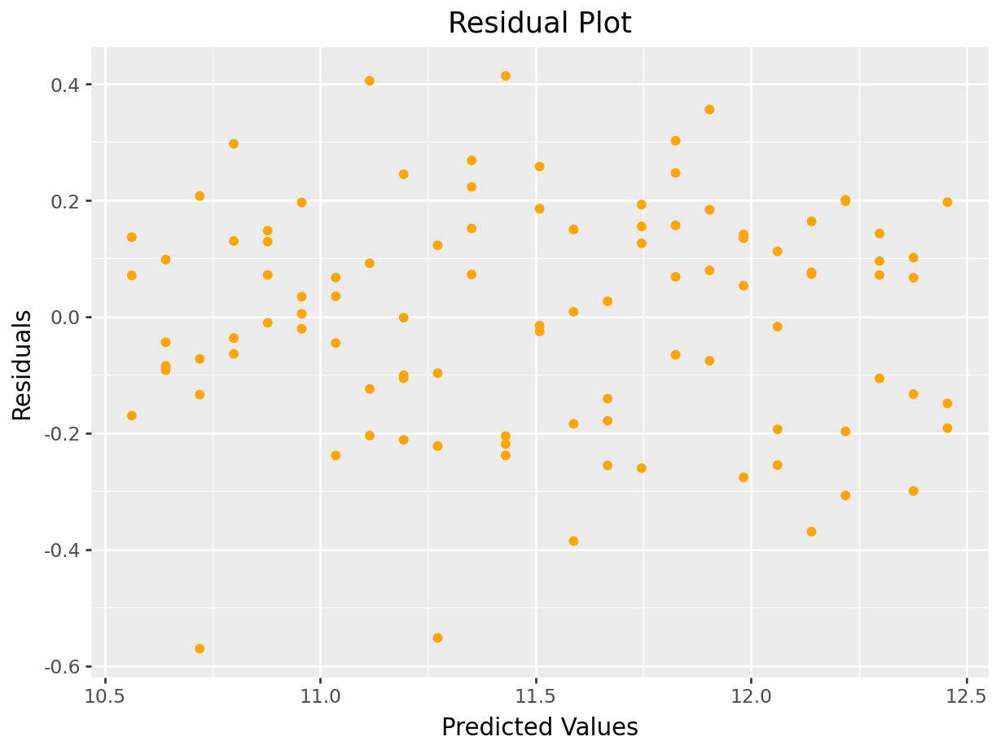
We can also do the weighted LS regression in Python:
x = np.repeat(np.arange(2, 11), 5)
# Set seed and generate heteroscedastic error
np.random.seed(26785)
error = np.random.normal(loc=0, scale=x)
# Generate y
y = 50 + 1.2 * x + error
df = pd.DataFrame({'x': x, 'y': y})
model1 = smf.ols("y~x",data=df).fit()
model1.summary()| Dep. Variable: | y | R-squared: | 0.210 |
|---|---|---|---|
| Model: | OLS | Adj. R-squared: | 0.192 |
| Method: | Least Squares | F-statistic: | 11.43 |
| Date: | Tue, 15 Jul 2025 | Prob (F-statistic): | 0.00155 |
| Time: | 11:34:08 | Log-Likelihood: | -144.58 |
| No. Observations: | 45 | AIC: | 293.2 |
| Df Residuals: | 43 | BIC: | 296.8 |
| Df Model: | 1 | ||
| Covariance Type: | nonrobust |
| coef | std err | t | P>|t| | [0.025 | 0.975] | |
|---|---|---|---|---|---|---|
| Intercept | 49.9070 | 2.320 | 21.514 | 0.000 | 45.229 | 54.585 |
| x | 1.2007 | 0.355 | 3.381 | 0.002 | 0.485 | 1.917 |
| Omnibus: | 3.109 | Durbin-Watson: | 2.014 |
|---|---|---|---|
| Prob(Omnibus): | 0.211 | Jarque-Bera (JB): | 2.458 |
| Skew: | -0.112 | Prob(JB): | 0.293 |
| Kurtosis: | 4.123 | Cond. No. | 16.9 |
Notes:
[1] Standard Errors assume that the covariance matrix of the errors is correctly specified.
df['pred'] = model1.predict()
df['resid'] = model1.resid
p=(ggplot(df, aes(x="pred",y="resid")) +geom_point(color="blue") +
geom_hline(yintercept = 0) +
labs(x="Predicted", y="Residuals")
)
p.show()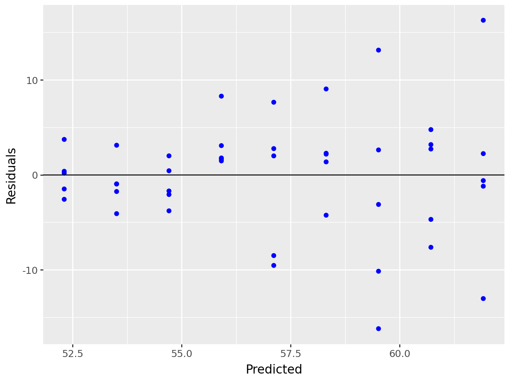
weights1 = 1 / x**2
x = sm.add_constant(x)
model2 = sm.WLS(y, x, weights=weights1)
results2 = model2.fit()
# Print regression results
print(results2.summary())## WLS Regression Results
## ==============================================================================
## Dep. Variable: y R-squared: 0.316
## Model: WLS Adj. R-squared: 0.301
## Method: Least Squares F-statistic: 19.90
## Date: Tue, 15 Jul 2025 Prob (F-statistic): 5.78e-05
## Time: 11:34:08 Log-Likelihood: -135.29
## No. Observations: 45 AIC: 274.6
## Df Residuals: 43 BIC: 278.2
## Df Model: 1
## Covariance Type: nonrobust
## ==============================================================================
## coef std err t P>|t| [0.025 0.975]
## ------------------------------------------------------------------------------
## const 49.6438 1.132 43.871 0.000 47.362 51.926
## x1 1.2478 0.280 4.461 0.000 0.684 1.812
## ==============================================================================
## Omnibus: 0.027 Durbin-Watson: 2.223
## Prob(Omnibus): 0.987 Jarque-Bera (JB): 0.209
## Skew: 0.011 Prob(JB): 0.901
## Kurtosis: 2.667 Cond. No. 8.50
## ==============================================================================
##
## Notes:
## [1] Standard Errors assume that the covariance matrix of the errors is correctly specified.## OLS Regression Results
## ==============================================================================
## Dep. Variable: y R-squared: 0.210
## Model: OLS Adj. R-squared: 0.192
## Method: Least Squares F-statistic: 10.96
## Date: Tue, 15 Jul 2025 Prob (F-statistic): 0.00189
## Time: 11:34:08 Log-Likelihood: -144.58
## No. Observations: 45 AIC: 293.2
## Df Residuals: 43 BIC: 296.8
## Df Model: 1
## Covariance Type: HC1
## ==============================================================================
## coef std err z P>|z| [0.025 0.975]
## ------------------------------------------------------------------------------
## const 49.9070 1.662 30.021 0.000 46.649 53.165
## x1 1.2007 0.363 3.311 0.001 0.490 1.912
## ==============================================================================
## Omnibus: 3.109 Durbin-Watson: 2.014
## Prob(Omnibus): 0.211 Jarque-Bera (JB): 2.458
## Skew: -0.112 Prob(JB): 0.293
## Kurtosis: 4.123 Cond. No. 16.9
## ==============================================================================
##
## Notes:
## [1] Standard Errors are heteroscedasticity robust (HC1)## OLS Regression Results
## ==============================================================================
## Dep. Variable: y R-squared: 0.210
## Model: OLS Adj. R-squared: 0.192
## Method: Least Squares F-statistic: 10.74
## Date: Tue, 15 Jul 2025 Prob (F-statistic): 0.00208
## Time: 11:34:08 Log-Likelihood: -144.58
## No. Observations: 45 AIC: 293.2
## Df Residuals: 43 BIC: 296.8
## Df Model: 1
## Covariance Type: HC2
## ==============================================================================
## coef std err z P>|z| [0.025 0.975]
## ------------------------------------------------------------------------------
## const 49.9070 1.679 29.726 0.000 46.616 53.198
## x1 1.2007 0.366 3.277 0.001 0.483 1.919
## ==============================================================================
## Omnibus: 3.109 Durbin-Watson: 2.014
## Prob(Omnibus): 0.211 Jarque-Bera (JB): 2.458
## Skew: -0.112 Prob(JB): 0.293
## Kurtosis: 4.123 Cond. No. 16.9
## ==============================================================================
##
## Notes:
## [1] Standard Errors are heteroscedasticity robust (HC2)5.4 Normality
Another assumption is that the residuals are normally distributed. We can test this assumption through use of visual aids or formal hypothesis tests. visual aids include a histogram of the residuals or Q-Q plot of residuals. A few tests of normality of residuals, include (but not limited to) Shapiro-Wilk, Anderson-Darling, Kolmogorov-Smirnov tests. In addition to the base R package, you should also install and library the nortest package.
Visualization
To visually inspect whether or not the residuals are normally distributed, we can either graph the historgram of residuals or create a Q-Q plot of the residuals. In the histogram, we are looking for a bell-shaped curve and in the Q-Q plot, we are looking for a straight line.
Figure 5.12: Histogram and Q-Q Plot of Residuals
Formal Hypothesis tests
You can also run a formal hypothesis test. The hypotheses are
\(H_{0}:\) Residuals are normally distributed
\(H_{A}:\) Residuals are not normally distributed.
There are MANY different tests for normality. Only two will be covered here.
- Anderson-Darling is based on the empirical cumulative distribution function of the data and gives more weight to the tails.
- Shapiro-Wilk test uses the idea of correlation between the sample data and normal scores. The Shapiro-Wilk is better for smaller data sets.
With large samples, you will most likely end up rejecting these hypothesis tests (using corrected significance levels is recommended). Keep in mind that you can also get different result from different tests. It is up to you to make the decision on whether or not you are comfortable in the assumption for normality holding in different situations.
5.4.0.1 R Code:
##
## Anderson-Darling normality test
##
## data: x
## A = 0.30275, p-value = 0.5742##
## Shapiro-Wilk normality test
##
## data: x
## W = 0.99889, p-value = 0.814Using a simulated data set (so the “TRUE” distribution is actually normal indicating that we should “Fail to reject” the null hypothesis). The p-values from both of these test illustrate that they would indicate the distribution is not significantly different from normal (which it should).
Box-cox Transformation
If the residuals are not normally distributed, one solution is to transform them to normality. However, the exact transformation might be difficult to identify. George Box and Sir David Cox developed an algorithm back in the 1960’s to assist in identifying “power” transformations to make a variable normally distributed (think…“what power should I raise this variable to?”). Their algorithm tries out different values of \(\lambda\) or powers of the response variable in the following way:
\[y = \begin{array} {rr} \frac{y^{\lambda}-1}{\lambda} & if \lambda \ne 0 \\ log(y) & if \lambda = 0 \end{array}\]
Example
Using the residuls from the originally salary data, we can take a look at the box-cox transformation.
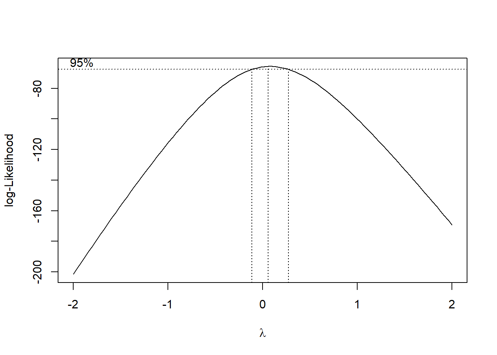 The output from the graph clearly incates that \(\lambda\) should be 0, which indicates a log transform.
In conclusion, to deal with data that is NOT normally distributed, we can either
- Use a robust regression (quantile regression or nonparametric)
- Transform either response or predictor variables or both to obtain normality in the residuals.
5.4.1 Python Code
p=(ggplot(experience,aes(x="resid_mlr")) + geom_histogram(fill='blue', color='black') +
labs(title='Histogram', x='Value', y='Count') +
theme_minimal()
)
p.show()## C:\PROGRA~3\ANACON~1\Lib\site-packages\plotnine\stats\stat_bin.py:109: PlotnineWarning: 'stat_bin()' using 'bins = 11'. Pick better value with 'binwidth'.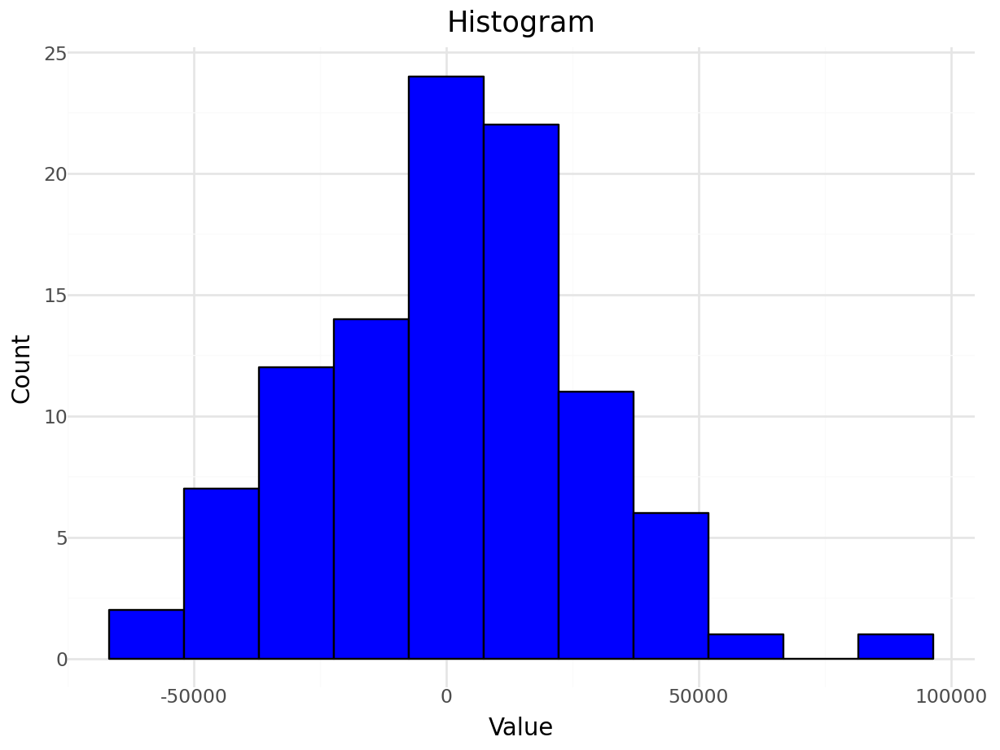
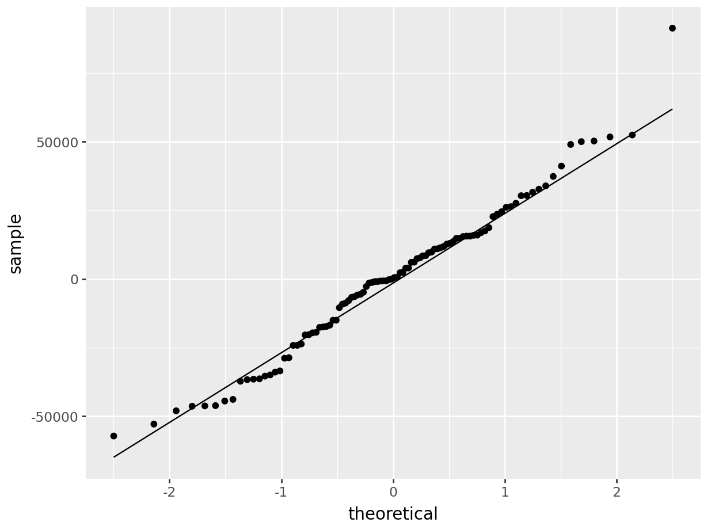
## ShapiroResult(statistic=0.9825804700820449, pvalue=0.21006919799469664)We can also perform the Anderson-Darling test in Python:
from statsmodels.stats.diagnostic import normal_ad
stat, pval = normal_ad(model_var.resid)
print(f"Anderson-Darling statistic: {stat:.4f}")## Anderson-Darling statistic: 0.4271## P-value: 0.3074Box-cox:
## (-0.291973062367277, 0.41815199140209897)5.5 Correlated Errors
Another important assumption is that the observations are independent. There are a couple of ways in which we assess this assumtpion:
- Experimental design or collection of data
- Explore residual plots
Depending on how the data was collected or the experimental design, there could be potential correlation in the observations. For example, if the data collected information on multiple family members (include husband and wife and kids). Or if multiple observations were collected on the same subject. There are various models that exists that can account for this dependence (longitudinal analysis, hierarchical models, etc). However, this type of analysis will be covered later throughout the year. There is no diagnostic measures to indicate this correlation structure. Your best way of knowing it is there is to know the experimental design or collection of data. We will focus our attention on a form of dependence that is evident from the residual plots, which is autocorrelation. This happens when ordered observations are dependent on prior observations. One of the most common instances of this correlation structure is through data that is collected over time, also referred to as time series. You will learn more about time series data in the Fall semester, but for now, let’s explore how to recognize if it is an issue in the analysis. To diagnose autocorrelation in data, you can
- Visually inspect the plot of residuals by time (see a pattern over time…usually cyclical)
- Conduct a Durbin-Watson test
In visually inspecting a plot of residuals across time, you would expect to see a type of cyclical pattern if autocorrelation exists as it does in Figure 5.13.

Figure 5.13: Residuals vs Time: Autocorrelation Present
In using the Durbin-Watson test, the hypotheses are:
\(H_{0}:\) No residual correlation
\(H_{A}:\) Residual Correlation
The Durbin-Watson test statistic is calculated by
\[ d=\frac{\sum_{t=2}^T(e_{t}-e_{t-1})^2}{\sum_{t=1}^T e_{t}^2}\]
where \(e\) represents the error terms, or residuals. The statistic d ranges from 0 to 4, with a value of 2 indicating no residual correlation. Values of d smaller than 2 may indicate a positive autocorrelation and a value of d larger than 2 may indicate a negative autocorrelation. However, the question becomes when is it “significantly different” than 2? Unless there is good reason to assume a negative autocorrelation, testing for positive autocorrelation would be the preferred test. The Durbin-Watson test is in the lmtest package of R. If you want to test for positive autocorrelation, you will need to specify the alternative of “greater” (even though the test statistic is testing for a value LESS than 2!!).
Example The following data set illustrates this test using the Google data set in the TSA package (returns of Google stock from 08/20/04 - 09/13/06).
##
## Durbin-Watson test
##
## data: lm.model
## DW = 1.842, p-value = 0.0321
## alternative hypothesis: true autocorrelation is greater than 0In running this test, you either need to have the data sorted by the correct date (it assumes the observations are correctly ordered by time). If they are not, there is an order.by option in which you can use. For this example, the p-value is 0.0321, which if we use an \(\alpha\) of 0.05, we would reject the null hypothesis and conclude there appears to be significant positive autocorrelation.
If your data has significant autocorrelation, then the error terms will not be correct. We will discuss in the Fall semester how to model time series data appropriately.
5.5.1 Python Code
| Dep. Variable: | returns | R-squared: | 0.007 |
|---|---|---|---|
| Model: | OLS | Adj. R-squared: | 0.005 |
| Method: | Least Squares | F-statistic: | 3.733 |
| Date: | Tue, 15 Jul 2025 | Prob (F-statistic): | 0.0539 |
| Time: | 11:34:10 | Log-Likelihood: | 1209.3 |
| No. Observations: | 521 | AIC: | -2415. |
| Df Residuals: | 519 | BIC: | -2406. |
| Df Model: | 1 | ||
| Covariance Type: | nonrobust |
| coef | std err | t | P>|t| | [0.025 | 0.975] | |
|---|---|---|---|---|---|---|
| Intercept | 0.0062 | 0.002 | 2.960 | 0.003 | 0.002 | 0.010 |
| time | -1.34e-05 | 6.93e-06 | -1.932 | 0.054 | -2.7e-05 | 2.24e-07 |
| Omnibus: | 76.878 | Durbin-Watson: | 1.842 |
|---|---|---|---|
| Prob(Omnibus): | 0.000 | Jarque-Bera (JB): | 398.126 |
| Skew: | 0.510 | Prob(JB): | 3.53e-87 |
| Kurtosis: | 7.159 | Cond. No. | 603. |
Notes:
[1] Standard Errors assume that the covariance matrix of the errors is correctly specified.
Durbin-Watson test statistic is reported by default in summary of linear regression, but there is no way of getting a p-value for this metric in Python. However, you can use a more general test called the Breusch-Godfrey test (too general…not very powerful).
from statsmodels.stats.diagnostic import acorr_breusch_godfrey
# Get test result
bg_test = acorr_breusch_godfrey(model_dw, nlags=1)
# Output: test statistic, p-value, f-statistic, f p-value
print(f"Breusch-Godfrey p-value: {bg_test[1]:.4f}")## Breusch-Godfrey p-value: 0.11865.6 Influential Observations and Outliers
Influential points and outliers play a large role in the estimation of the model and its prediction. Influential points are usually those points on the edges of the x-values and can greatly impact the slopes in the regression equation. Outliers tend to be those values that do not follow the trend of the data and are generally found by large deviations in the y direction. For multiple linear regression, outliers are found by using residuals. These can be standardize residuals or studentized residuals. Influential points can be discovered by Cook’s D, dffits, dfbetas or Hat values. These points are important to identify and recognize their influence on the regression, however, it does NOT mean that these points should be removed. Removal of data should be taken very seriously. We would obviously want to omit any observations made in error, due to typos or reporting inaccuracies, but we do not remove data points just because they are outside the scope of our expectations. We have many tools at our disposal for modeling with such observations, and we should always develop a deep understanding of the application-specific risks and rewards associated with data removal.
In the this section we will cover the following statistics to help us detect outliers and influential observations respectively.
Outliers
- rstandard
- rstudent
Influential observations
- dffits
- dfbetas
- cooks.distance
- hatvalues
Outliers
In using residuals to detect outliers, we first need to “standardize” them, or divide by their standard errors. In this sense, we can think of these “standardized” residuals as an approximate z-score. Therefore, we look for residuals greater in magnitude than 3 as potential outliers. R calculates two different types of standardized residuals: 1. standardized residuals (rstandard) and 2. studentized residuals (rstudent). Standardized residuals are definied as \[ r_{i}=\frac{e_{i}}{\hat\sigma\sqrt{1-H_{ii}}},\] where \(\hat\sigma\) is the square root of the MSE and \(H_{ii}\) is from the diagonal of the hat matrix (hat matrix will be discussed in influential observations). Studentized residuals are definied as \[ t_{i}=\frac{e_{i}}{\hat\sigma_{(i)}\sqrt{1-H_{ii}}},\] where \(\hat\sigma_{(i)}\) is the square root of the MSE calculated when observation i is deleted and \(H_{ii}\) is from the diagonal of the hat matrix. The studentized residuals follow a t-distribution with \(n-k-2\), where \(k\) is the number of explanatory variables(notice that this has one less degree of freedom than the usual error in regression which is due to the one deleted observation).
Influential observations
Influential observations are observations that can dramatically change the model’s estimates. It is important to identify and understand these where these observations are. There are a number of different measures to aid in identifying influential observations, which will be discussed below.
Cook’s distance, also referred to as Cook’s D, measures the difference in the regression estimates when the \(i^{th}\) observation is left out. A rough rule of thumb is to use the quantile of the \(F\) distribution with numerator degrees of freedom \(p\) and denominator degrees of freedom \(n-p\) where \(n\) is the number of observations and \(p\) is the number of parameters in the regression equation.
Dffits calculates the difference of fitted values for each point in the regression versus the fit of the regression line for that point if it was removed. Large values of dffits indicate that the point is influential in the calculation of the estimated regression line. As a general rule of thumb, a cutoff of \(2\sqrt{p/n}\) is used to identify potential influential points.
Dfbetas follows the same idea as dffits. The difference in the estimated betas is calculated for each observation (observation included in the estimated beta and observation NOT included in estimating the beta). This is done for each individual observation and each estimated beta. For small data sets, a value greater than 1 is suspect of an influential observation. For large data sets, the cutoff is \(\frac{2}{\sqrt{n}}\).
The hat values \(H_{ii}\) are the diagonal values of \[\boldsymbol{X(X^{T}X)^{-1.}X^{T}}.\] Hat values can identify high leverage points in a regression. A general rule of thumb are hat values greater than \(\frac{2p}{n}\).
Example
We will use the Scottish hill races as an example to illustrate how to calculate and visualize these values. The Scottish hill races include the following variables:
- Time: Record time to complete course
- Distance: Distance in the course
- Climb: Vertical climb in the course
5.6.0.1 R code:
url = 'http://www.statsci.org/data/general/hills.txt'
races_table = read.table(url, header=TRUE, sep='\t')
n.index=seq(1,nrow(races_table))
races.table=cbind(races_table,n.index)
lm.model=lm(Time~Distance+Climb,data=races_table)
##Plots of outliers
a = ggplot(lm.model,aes(x=n.index,y=rstandard(lm.model)))+geom_point(color="orange")+geom_line(y=-3)+geom_line(y=3)+labs(title = "Internal Studentized Residuals",x="Observation",y="Residuals")
b = ggplot(lm.model,aes(x=n.index,y=rstudent(lm.model)))+geom_point(color="orange")+geom_line(y=-3)+geom_line(y=3)+labs(title = "External Studentized Residuals",x="Observation",y="Residuals")
##Influential points
c = ggplot(lm.model,aes(x=n.index,y=rstudent(lm.model)))+geom_point(color="orange")+geom_line(y=-3)+geom_line(y=3)+labs(title = "External Studentized Residuals",x="Observation",y="Residuals")
##Cook's D
D.cut=4/(nrow(races_table)-3)
d =ggplot(lm.model,aes(x=n.index,y=cooks.distance(lm.model)))+geom_point(color="orange")+geom_line(y=D.cut)+labs(title = "Cook's D",x="Observation",y="Cook's Distance")
##Dffit
df.cut=2*(sqrt(3/nrow(races_table)))
e =ggplot(lm.model,aes(x=n.index,y=dffits(lm.model)))+geom_point(color="orange")+geom_line(y=df.cut)+geom_line(y=-df.cut)+labs(title = "DFFITS",x="Observation",y="DFFITS")
db.cut=2/sqrt(nrow(races_table))
f =ggplot(lm.model,aes(x=n.index,y=dfbetas(lm.model)[,'Climb']))+geom_point(color="orange")+geom_line(y=db.cut)+geom_line(y=-db.cut)+labs(title = "DFBETA for Climb",x="Observation",y="DFBETAS")
g =ggplot(lm.model,aes(x=n.index,y=dfbetas(lm.model)[,'Distance']))+geom_point(color="orange")+geom_line(y=db.cut)+geom_line(y=-db.cut)+labs(title = "DFBETA for Distance",x="Observation",y="DFBETAS")
##Hat
hat.cut=2*(3)/nrow(races_table)
h = ggplot(lm.model,aes(x=n.index,y=hatvalues(lm.model)))+geom_point(color="orange")+geom_line(y=hat.cut)+labs(title = "Hat values",x="Observation",y="Hat Values")
grid.arrange(a,b,c,d,e,f,g,ncol=2)Figure 5.14: Plots for Exploring Outliers and Influential Points
Figure 5.14 shows a number of useful graphics that help us explore outliers and influential points.
A good graph to explore is looking at the studentized residuals versus the hat values. An observation that is high leverage AND an outlier is one that needs to be explored.
ggplot(lm.model,aes(x=hatvalues(lm.model),y=rstudent(lm.model))) + geom_point(color="orange")+ labs(x="Hat values",y="Residuals")
Figure 5.15: Influential and Outlier Observations
5.6.1 Python Code
Fit model:
races_table = pd.read_table("http://www.statsci.org/data/general/hills.txt")
# Fit linear model
X = races_table[['Distance', 'Climb']]
X = sm.add_constant(X) # adds intercept
y = races_table['Time']
lm_model = sma.OLS(y, X).fit()
model_io = smf.ols("Time ~ Distance + Climb", data = races_table).fit()
model_io.summary()| Dep. Variable: | Time | R-squared: | 0.919 |
|---|---|---|---|
| Model: | OLS | Adj. R-squared: | 0.914 |
| Method: | Least Squares | F-statistic: | 181.7 |
| Date: | Tue, 15 Jul 2025 | Prob (F-statistic): | 3.40e-18 |
| Time: | 11:34:13 | Log-Likelihood: | -142.11 |
| No. Observations: | 35 | AIC: | 290.2 |
| Df Residuals: | 32 | BIC: | 294.9 |
| Df Model: | 2 | ||
| Covariance Type: | nonrobust |
| coef | std err | t | P>|t| | [0.025 | 0.975] | |
|---|---|---|---|---|---|---|
| Intercept | -8.9920 | 4.303 | -2.090 | 0.045 | -17.756 | -0.228 |
| Distance | 6.2180 | 0.601 | 10.343 | 0.000 | 4.993 | 7.442 |
| Climb | 0.0110 | 0.002 | 5.387 | 0.000 | 0.007 | 0.015 |
| Omnibus: | 47.910 | Durbin-Watson: | 2.249 |
|---|---|---|---|
| Prob(Omnibus): | 0.000 | Jarque-Bera (JB): | 233.976 |
| Skew: | 3.026 | Prob(JB): | 1.56e-51 |
| Kurtosis: | 14.127 | Cond. No. | 4.20e+03 |
Notes:
[1] Standard Errors assume that the covariance matrix of the errors is correctly specified.
[2] The condition number is large, 4.2e+03. This might indicate that there are
strong multicollinearity or other numerical problems.
If you need to get actual values of residuals/influence:
from statsmodels.stats.outliers_influence import OLSInfluence
influence = OLSInfluence(model_io)
influence.resid_studentized_internal## 0 0.164547
## 1 -0.530157
## 2 -0.320258
## 3 -0.061540
## 4 -0.869429
## 5 0.055980
## 6 2.798195
## 7 -0.054764
## 8 -0.082497
## 9 0.296673
## 10 0.532907
## 11 -0.079673
## 12 -0.650019
## 13 0.720096
## 14 -0.599632
## 15 -0.981525
## 16 -0.280934
## 17 4.565581
## 18 -0.876961
## 19 0.051033
## 20 0.208624
## 21 -0.100766
## 22 -0.346860
## 23 0.319234
## 24 0.167320
## 25 -0.824225
## 26 -0.189338
## 27 -0.279657
## 28 -0.017885
## 29 -0.465994
## 30 -1.178913
## 31 -0.178834
## 32 0.738902
## 33 -0.019440
## 34 -0.816190
## dtype: float64## 0 0.162024
## 1 -0.524115
## 2 -0.315720
## 3 -0.060574
## 4 -0.866026
## 5 0.055101
## 6 3.168980
## 7 -0.053904
## 8 -0.081207
## 9 0.292403
## 10 0.526858
## 11 -0.078426
## 12 -0.644047
## 13 0.714568
## 14 -0.593532
## 15 -0.980945
## 16 -0.276851
## 17 7.610845
## 18 -0.873713
## 19 0.050231
## 20 0.205478
## 21 -0.099195
## 22 -0.342041
## 23 0.314708
## 24 0.164757
## 25 -0.819995
## 26 -0.186460
## 27 -0.275590
## 28 -0.017604
## 29 -0.460220
## 30 -1.186396
## 31 -0.176106
## 32 0.733549
## 33 -0.019134
## 34 -0.811830
## dtype: float64## (0 0.000513
## 1 0.004875
## 2 0.001365
## 3 0.000064
## 4 0.014741
## 5 0.000051
## 6 1.893349
## 7 0.000043
## 8 0.000095
## 9 0.001405
## 10 0.210521
## 11 0.000096
## 12 0.004704
## 13 0.009339
## 14 0.004834
## 15 0.014907
## 16 0.002386
## 17 0.407156
## 18 0.010265
## 19 0.000042
## 20 0.000870
## 21 0.000172
## 22 0.001661
## 23 0.002108
## 24 0.000499
## 25 0.013179
## 26 0.000511
## 27 0.001018
## 28 0.000003
## 29 0.003669
## 30 0.064123
## 31 0.000531
## 32 0.037695
## 33 0.000005
## 34 0.052422
## dtype: float64, array([0.99998359, 0.99952092, 0.99992875, 0.99999927, 0.99750547,
## 0.99999948, 0.15057304, 0.9999996 , 0.99999869, 0.99992561,
## 0.88836519, 0.99999867, 0.99954591, 0.99873536, 0.99952695,
## 0.9974636 , 0.99983562, 0.74889062, 0.99854403, 0.99999962,
## 0.99996374, 0.99999682, 0.99990442, 0.99986344, 0.99998426,
## 0.99788819, 0.99998366, 0.99995412, 0.99999999, 0.99968682,
## 0.97843259, 0.9999827 , 0.99002625, 0.99999998, 0.9838756 ]))## (0 0.038618
## 1 -0.119560
## 2 -0.063095
## 3 -0.013674
## 4 -0.209472
## 5 0.012210
## 6 2.699091
## 7 -0.011150
## 8 -0.016632
## 9 0.063994
## 10 0.785688
## 11 -0.016716
## 12 -0.117701
## 13 0.166102
## 14 -0.119203
## 15 -0.211352
## 16 -0.083368
## 17 1.842375
## 18 -0.174838
## 19 0.011019
## 20 0.050318
## 21 -0.022336
## 22 -0.069613
## 23 0.078394
## 24 0.038085
## 25 -0.197816
## 26 -0.038570
## 27 -0.054459
## 28 -0.003092
## 29 -0.103619
## 30 -0.441381
## 31 -0.039310
## 32 0.333845
## 33 -0.003922
## 34 -0.394450
## dtype: float64, 0.5855400437691199)## array([[ 3.78114620e-02, -1.66142583e-02, -4.74356249e-03],
## [-5.95797144e-02, 6.72153961e-02, -7.33958853e-02],
## [-4.85768597e-02, -6.70654508e-03, 2.80327646e-02],
## [-7.66497083e-03, -5.67519011e-03, 8.76365984e-03],
## [-5.04605283e-02, 8.47092735e-02, -1.45004611e-01],
## [ 3.48445633e-03, -4.31606470e-03, 7.57593895e-03],
## [-8.90654684e-01, -7.12773548e-01, 2.36461849e+00],
## [-8.44278394e-03, -1.64840934e-03, 5.56190747e-03],
## [-1.43689115e-02, 9.13139595e-04, 6.16065598e-03],
## [ 4.70341147e-02, 1.30569237e-02, -3.65191836e-02],
## [-3.01182091e-01, 7.68715994e-01, -4.79849318e-01],
## [-1.14916485e-02, 9.65572102e-03, -7.48775503e-03],
## [-3.17290631e-02, -2.99106792e-02, -7.06675373e-04],
## [ 1.18031242e-01, 4.20335396e-02, -1.04884058e-01],
## [-1.00376388e-01, 5.77007540e-02, -2.23168727e-02],
## [-1.85202935e-02, 6.78882683e-03, -9.98617172e-02],
## [ 1.19637294e-02, -6.65049703e-02, 3.44553620e-02],
## [ 1.75827483e+00, -4.06545270e-01, -6.55934189e-01],
## [-1.58890179e-01, 4.43113962e-02, 2.94135680e-02],
## [ 8.65836948e-03, 1.42439015e-03, -5.94640219e-03],
## [ 4.77654621e-02, -1.00187391e-02, -1.91985978e-02],
## [-1.88889123e-02, 1.38562806e-02, -6.46531589e-03],
## [-4.13064821e-02, 3.40969664e-02, -3.30224386e-02],
## [ 7.48332952e-02, -4.63850912e-02, 6.42781055e-03],
## [ 3.69114627e-02, -1.26332955e-02, -8.25681544e-03],
## [-1.37724315e-01, 1.36123898e-01, -1.01306082e-01],
## [-2.92047355e-02, -5.70207164e-03, 1.92393928e-02],
## [-4.76410803e-02, 6.93608846e-03, 1.49895347e-02],
## [-2.13796696e-03, 6.46622392e-04, -3.28107642e-04],
## [-8.53158805e-02, -7.70515002e-03, 5.48379624e-02],
## [ 2.09938203e-02, 1.70124162e-01, -3.73633899e-01],
## [-2.85790991e-02, -8.69351158e-03, 2.32754469e-02],
## [-1.58227428e-01, 9.70139844e-02, 1.55701652e-01],
## [-3.55632705e-03, 7.04242903e-04, 1.05420857e-03],
## [ 2.08721643e-01, -1.99048204e-01, -1.00907222e-01]])Plot of external studentized residuals:
resid_values=influence.resid_studentized_external
resid_df = pd.DataFrame({
'Observation': range(1, len(resid_values) + 1),
'Resid': resid_values
})
p = (
ggplot(resid_df, aes(x='Observation', y='Resid')) +
geom_point(color='orange') +
geom_hline(yintercept=-2, linetype='dashed', color='red') +
geom_hline(yintercept=2, linetype='dashed', color='red') +
labs(
title='External Studentized residuals',
x='Observation',
y='Studentized Residuals'
) +
theme_minimal()
)
p.show()
Plot of Cook’s D:
cooks_value,_ = influence.cooks_distance
# Calculate Cook's D threshold
n = model_io.nobs
p = model_io.df_model + 1 # includes intercept
cutoff = 4/(n-p)
cooks_df = pd.DataFrame({
'Observation': range(1, len(cooks_value) + 1),
'Cooks': cooks_value
})
p = (
ggplot(cooks_df, aes(x='Observation', y='Cooks')) +
geom_point(color='orange') +
geom_hline(yintercept=cutoff, linetype='dashed', color='red') +
labs(
title='Cooks D Plot with Cutoff',
x='Observation',
y='CooksD'
) +
theme_minimal()
)
p.show()
Plot of DFFITS:
dffits_values, _ = influence.dffits
# Calculate DFFITS threshold
n = model_io.nobs
p = model_io.df_model + 1 # includes intercept
cutoff = 2 * (p / n) ** 0.5
dffits_df = pd.DataFrame({
'Observation': range(1, len(dffits_values) + 1),
'DFFITS': dffits_values
})
cutoff = 2 * (p / n) ** 0.5
plot = (
ggplot(dffits_df, aes(x='Observation', y='DFFITS')) +
geom_point(color='orange') +
geom_hline(yintercept=cutoff, linetype='dashed', color='red') +
geom_hline(yintercept=-cutoff, linetype='dashed', color='red') +
labs(
title='DFFITS Plot with Cutoff',
x='Observation',
y='DFFITS'
) +
theme_minimal()
)
plot.show()
Plot studentized residuals and leverage:
n = model_io.nobs
p = model_io.df_model + 1 # includes intercept
cutoff = 2 * (p / n)
leverage_values = influence.hat_matrix_diag
influence_df = pd.DataFrame({
'leverage': leverage_values,
'Resid': resid_values,
'observation': np.arange(n),
'Cooks': cooks_value
})
influence_plot = (
ggplot(influence_df, aes(x='leverage', y='Resid', size='Cooks')) +
geom_point(color='blue') +
geom_hline(yintercept=2, linetype='dashed', color='purple') +
geom_hline(yintercept=-2, linetype='dashed', color='purple') +
geom_vline(xintercept=cutoff, linetype='dashed', color='green') +
scale_size_continuous(name="Cook's D", range=[1, 20]) +
labs(
title='Influence Plot with Cutoffs',
x='Leverage',
y='Studentized Residuals'
) +
theme_minimal()
)
# Mark influential or outlying points
influence_df['label'] = influence_df.apply(
lambda row: str(row['observation']) if abs(row['Resid']) > 2 and row['leverage'] > cutoff else '',
axis=1
)
influence_plot += geom_text(aes(label='label'), ha='left', nudge_x=0.01, size=8)
influence_plot.show()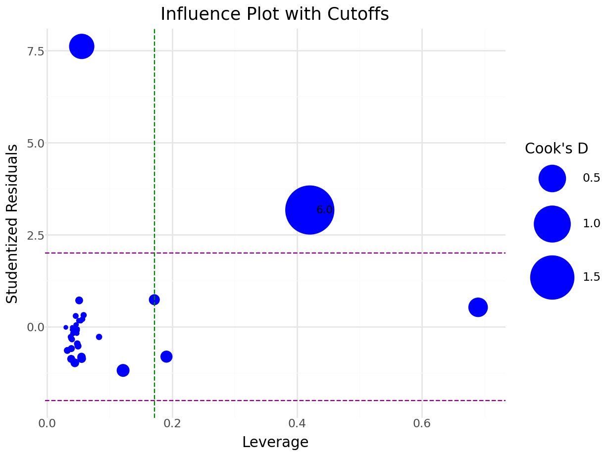
5.7 Multicollinearity
Multicollinearity occurs when one or more predictor variables are linearly related to each other and will create issues with the regression. The parameter estimates will not be stable and the standard errors will be inflated (making it more difficult to find significant explantory variables). The two most common ways to identify multicollinearity is by looking at the correlation among the predictor variables and calculating the variance inflation factor.
The variance inflation factor (also referred to as VIF) will take each explanatory variable and model it as a linear regression of the remaining explanatory variables. For example, let’s say we have the following regression equation:
\[\widehat{Y}_{i}=b_{0} + b_{1}x_{1}+ b_{2}x_{2}+ b_{3}x_{3}.\]
There are only 3 explanatory variables in this regression. A VIF will be calculated on each \(x_{i}\) in the following manner:
- A regression is fit on each \(x_{i}\) with the remaining \(x_{i}\)’s as the explanatory variables. For example, to calculate the VIF for \(x_{1}\), we fit the following model:
\[\widehat{x}_{1}=b_{0} + b_{1}x_{2}+ b_{2}x_{3},\]
and obtain the \(R^2\) value from this model (call it \(R_{1}^2\)).
2. The VIF for \(x_{1}\) is calculated by
\[VIF=\frac{1}{1-R_{1}^2}.\]
Repeat this process for each of the other explanatory variables. If a VIF value is larger than 10, then we say that multicollinearity is an issue.
Example
We will use the mtcars data set dealing with fuel consumption and automobile design. The data set consists of the following variables:
A data frame with 32 observations on 11 (numeric) variables.
- mpg: Miles/(US) gallon
- cyl: Number of cylinders
- disp: Displacement (cu.in.)
- hp: Gross horsepower
- drat: Rear axle ratio
- wt: Weight (1000 lbs)
- qsec: 1/4 mile time
- vs: Engine (0 = V-shaped, 1 = straight)
- am: Transmission (0 = automatic, 1 = manual)
- gear: Number of forward gears
5.7.0.1 R code:
## mpg cyl disp hp drat wt
## mpg 1.0000000 -0.8521620 -0.8475514 -0.7761684 0.68117191 -0.8676594
## cyl -0.8521620 1.0000000 0.9020329 0.8324475 -0.69993811 0.7824958
## disp -0.8475514 0.9020329 1.0000000 0.7909486 -0.71021393 0.8879799
## hp -0.7761684 0.8324475 0.7909486 1.0000000 -0.44875912 0.6587479
## drat 0.6811719 -0.6999381 -0.7102139 -0.4487591 1.00000000 -0.7124406
## wt -0.8676594 0.7824958 0.8879799 0.6587479 -0.71244065 1.0000000
## qsec 0.4186840 -0.5912421 -0.4336979 -0.7082234 0.09120476 -0.1747159
## vs 0.6640389 -0.8108118 -0.7104159 -0.7230967 0.44027846 -0.5549157
## am 0.5998324 -0.5226070 -0.5912270 -0.2432043 0.71271113 -0.6924953
## gear 0.4802848 -0.4926866 -0.5555692 -0.1257043 0.69961013 -0.5832870
## carb -0.5509251 0.5269883 0.3949769 0.7498125 -0.09078980 0.4276059
## qsec vs am gear carb
## mpg 0.41868403 0.6640389 0.59983243 0.4802848 -0.55092507
## cyl -0.59124207 -0.8108118 -0.52260705 -0.4926866 0.52698829
## disp -0.43369788 -0.7104159 -0.59122704 -0.5555692 0.39497686
## hp -0.70822339 -0.7230967 -0.24320426 -0.1257043 0.74981247
## drat 0.09120476 0.4402785 0.71271113 0.6996101 -0.09078980
## wt -0.17471588 -0.5549157 -0.69249526 -0.5832870 0.42760594
## qsec 1.00000000 0.7445354 -0.22986086 -0.2126822 -0.65624923
## vs 0.74453544 1.0000000 0.16834512 0.2060233 -0.56960714
## am -0.22986086 0.1683451 1.00000000 0.7940588 0.05753435
## gear -0.21268223 0.2060233 0.79405876 1.0000000 0.27407284
## carb -0.65624923 -0.5696071 0.05753435 0.2740728 1.00000000## cyl disp hp drat wt qsec vs am
## 15.373833 21.620241 9.832037 3.374620 15.164887 7.527958 4.965873 4.648487
## gear carb
## 5.357452 7.908747From the correlation output and VIF output, it is clear that multicollinearity is an issue. To deal with multicollinearity, we can do either of the following:
- Remove one or more variables that are co-linearly related to another variable(s).
- Create new transformed variables (take linear combinations of variables; create ratio of variables, etc).
5.7.1 Python Code
## array([[ 1. , -0.85216196, -0.84755138, -0.77616837, 0.68117191,
## -0.86765938, 0.41868403, 0.66403892, 0.59983243, 0.48028476,
## -0.55092507],
## [-0.85216196, 1. , 0.90203287, 0.83244745, -0.69993811,
## 0.78249579, -0.59124207, -0.8108118 , -0.52260705, -0.4926866 ,
## 0.52698829],
## [-0.84755138, 0.90203287, 1. , 0.79094859, -0.71021393,
## 0.88797992, -0.43369788, -0.71041589, -0.59122704, -0.5555692 ,
## 0.39497686],
## [-0.77616837, 0.83244745, 0.79094859, 1. , -0.44875912,
## 0.65874789, -0.70822339, -0.72309674, -0.24320426, -0.12570426,
## 0.74981247],
## [ 0.68117191, -0.69993811, -0.71021393, -0.44875912, 1. ,
## -0.71244065, 0.09120476, 0.44027846, 0.71271113, 0.69961013,
## -0.0907898 ],
## [-0.86765938, 0.78249579, 0.88797992, 0.65874789, -0.71244065,
## 1. , -0.17471588, -0.55491568, -0.69249526, -0.583287 ,
## 0.42760594],
## [ 0.41868403, -0.59124207, -0.43369788, -0.70822339, 0.09120476,
## -0.17471588, 1. , 0.74453544, -0.22986086, -0.21268223,
## -0.65624923],
## [ 0.66403892, -0.8108118 , -0.71041589, -0.72309674, 0.44027846,
## -0.55491568, 0.74453544, 1. , 0.16834512, 0.20602335,
## -0.56960714],
## [ 0.59983243, -0.52260705, -0.59122704, -0.24320426, 0.71271113,
## -0.69249526, -0.22986086, 0.16834512, 1. , 0.79405876,
## 0.05753435],
## [ 0.48028476, -0.4926866 , -0.5555692 , -0.12570426, 0.69961013,
## -0.583287 , -0.21268223, 0.20602335, 0.79405876, 1. ,
## 0.27407284],
## [-0.55092507, 0.52698829, 0.39497686, 0.74981247, -0.0907898 ,
## 0.42760594, -0.65624923, -0.56960714, 0.05753435, 0.27407284,
## 1. ]])X = mtcars.loc[:, mtcars.columns!='mpg']
X = X.assign(const=1)
vif = pd.DataFrame()
vif['VIF'] = [ss.outliers_influence.variance_inflation_factor(X.values, i) for i in range(X.shape[1])]
vif['variable'] = X.columns
print(vif)## VIF variable
## 0 15.373833 cyl
## 1 21.620241 disp
## 2 9.832037 hp
## 3 3.374620 drat
## 4 15.164887 wt
## 5 7.527958 qsec
## 6 4.965873 vs
## 7 4.648487 am
## 8 5.357452 gear
## 9 7.908747 carb
## 10 1596.273030 const